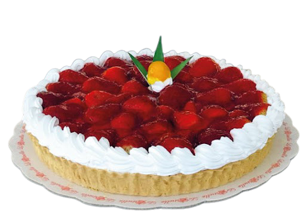
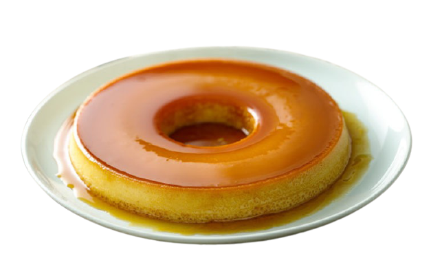
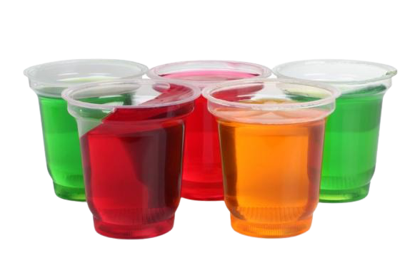

Pie de
Manzana
Es un postre que se puede degustar frío o caliente y consiste en una masa suave o crujiente rellena de manzanas, las cuales pueden ser en rodajas, cubitos o puré. El cliente puede decidir entre diferentes sabores.
Cheesecake
El cheesecake, es un postre para degustación familiar, consta de una tarta de cualquier sabor con una base de masa dulce que se hornea. La tarta puede ser de diferentes sabores, segun cual desee el cliente.
Flan
El flan regular o quesillo, es un postre muy conocido hecho con una natilla que se prepara con huevos enteros, leche y azúcar, que luego es refrigerada para obtener una textura cremosa y gelatinosa.
Torta de
Galleta
Se realiza sin horno y consiste de pisos de galletas ballados en budin de chocolate. Es la típica tarta perfecta para un cumpleaños de niños con una sabor a chocolate increíble, por lo que es sencilla pero riquisima.
Gelatinas
Las gelatinas son productos que resultan atractivos a los niños por su consistencia suave y su textura blanda así como por sus llamativos colores y variados sabores, asi que son preferibles para las fiestas infantiles.
Helados
Frutales
Es un buen postre o merienda para cualquier persona que siga una dieta sana y equilibrada, es comúnmente consumido en épocas de verano y primavera, se puede elegir entre muchos sabores de frutas.